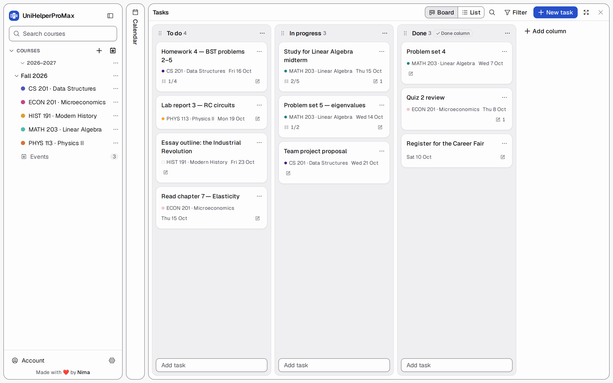
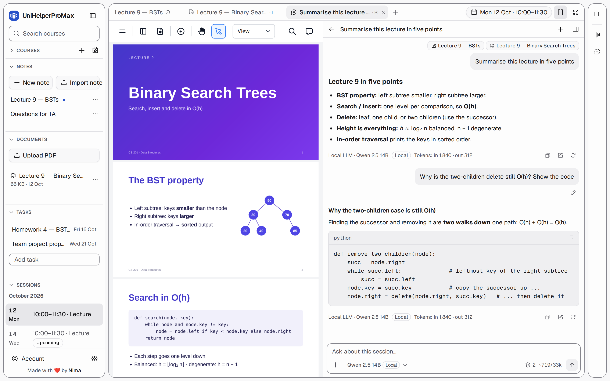

A calendar built for university
Weekly classes, exams, office hours and seminars, with years and semesters.
Free & open source · Desktop or self-hosted
Timetable, lecture notes, slides, recordings, transcripts, AI chat and tasks, organised by class and stored as plain files you own.
irm https://raw.githubusercontent.com/Nimaj2002/UniHelperProMax/main/install.ps1 | iex

Why you'll love it
Open Monday's Data Structures lecture and its notes, slides, recording and transcript are already there. Two clicks from the calendar, with every deadline on a board right next to it.
Weekly classes, exams, office hours and seminars, with years and semesters.
Markdown editor with tables, code blocks, checklists, Mermaid diagrams and LaTeX math.
Built-in PDF reader with highlights, drawings and comments, in split view.
Recording keeps going if the tab closes or the Wi-Fi drops. Or upload audio you already have.
The transcript is added to the end of your note. Nothing you wrote changes.
OpenAI, Anthropic, Gemini or a local model (Ollama, LM Studio), with your notes, slides, pictures and recordings attached.
Assignments, readings and exam prep on a board or a list, with checklists, quick notes and due dates.
18 built-in themes (Catppuccin, Dracula, Tokyo Night, Nord…) or design your own from four colours.
A normal folder of .md, .pdf and audio files on your own disk.
Back up everything in one click and restore it on any computer.
Installers for Windows, macOS and Linux. No Python, no Node, no login, works offline.
Self-host it for yourself or your friends. No account with us, no tracking.
A quick tour
Every course gets its own colour, a red line marks the current time, and exams or events stand out with their own marker.
.ics from Google, Apple Calendar or Outlook
The home page shows your calendar and your tasks side by side. Drag "Problem set 3" from To do to In progress to Done.
.csv for any spreadsheet
A live Markdown editor. Each note is a plain .md file in that class's folder, so VS Code or Obsidian open it too.

Hit Record during the lecture or upload an audio file. Click Transcribe, choose a note, and the transcript is added to the end of it.

Every class session has its own chat. Attach today's notes, the slides, a photo of the whiteboard or the recording, and ask "make me 10 exam questions from this".
.md
Pick from 18 built-in themes, or make your own from four colours. The editor flags any colour pair that's hard to read.
.uhtheme.json
And a lot of small things
.ics and task export to .csvGet started in 3 minutes
Pick your system. We've selected the one you're on.
Desktop app · release file
Windows 10 or newer (x64). Nothing else to install: the app brings its own server, works offline and needs no login.
Not code-signed yet: on "Windows protected your PC" click More info → Run anyway. If Smart App Control blocks it, use the self-hosted version.
Self-host · with script
irm https://raw.githubusercontent.com/Nimaj2002/UniHelperProMax/main/install.ps1 | iex
cd UniHelperProMax; .\start.ps1Checks Node.js 22 LTS, offers to install uv, installs dependencies and builds. Run again to update. Options: -Docker -Dir -Start -Yes. Then open localhost:8000.
Self-host · without script
git clone https://github.com/Nimaj2002/UniHelperProMax.git
cd UniHelperProMax\backend; uv sync
cd ..\frontend; corepack pnpm install; corepack pnpm build
cd ..\backend
$env:UNIHELPER_DATA_DIR="./data"; $env:UNIHELPER_STATIC_DIR="../frontend/dist"
uv run uvicorn unihelper.main:app --port 8000Needs Python 3.12+ with uv and Node.js 22 LTS (only to build the frontend once).
Development
cd backend; $env:UNIHELPER_DATA_DIR="./data"
uv run uvicorn unihelper.main:app --reload --port 8000
cd frontend; corepack pnpm dev # http://localhost:5173Build the Windows installer yourself from the repo root:
.\scripts\build-desktop.ps1 # Setup-<version>-x64.exe
.\scripts\build-desktop.ps1 -UnpackedDesktop app · release file
macOS 13 or newer (Apple Silicon). Open the .dmg and drag UniHelperProMax to Applications.
Not notarized yet: if macOS can't verify the app, go to System Settings → Privacy & Security → Open Anyway, or run:
xattr -dr com.apple.quarantine /Applications/UniHelperProMax.appSelf-host · with script
curl -fsSL https://raw.githubusercontent.com/Nimaj2002/UniHelperProMax/main/install.sh | bash
cd UniHelperProMax && ./start.shChecks Node.js 22 LTS, offers to install uv, installs dependencies and builds. Run again to update. Options: --docker --dir --start --yes. Then open localhost:8000.
Self-host · without script
git clone https://github.com/Nimaj2002/UniHelperProMax.git
cd UniHelperProMax/backend && uv sync
cd ../frontend && corepack pnpm install && corepack pnpm build
cd ../backend && UNIHELPER_DATA_DIR=./data UNIHELPER_STATIC_DIR=../frontend/dist \
uv run uvicorn unihelper.main:app --port 8000Needs Python 3.12+ with uv and Node.js 22 LTS (only to build the frontend once).
Development
cd backend && UNIHELPER_DATA_DIR=./data uv run uvicorn unihelper.main:app --reload --port 8000
cd frontend && corepack pnpm dev # http://localhost:5173Build the macOS installer yourself from the repo root:
scripts/build-desktop.sh # .dmg for this Mac's CPU
scripts/build-desktop.sh --arch x64 # Intel MacsDesktop app · release files
Linux x64, any distribution. The AppImage needs libfuse2 (libfuse2t64 on Ubuntu 24.04).
chmod +x UniHelperProMax-*.AppImage && ./UniHelperProMax-*.AppImage
# or, on Debian / Ubuntu
sudo apt install ./unihelperpromax_*_amd64.debSelf-host · with script
curl -fsSL https://raw.githubusercontent.com/Nimaj2002/UniHelperProMax/main/install.sh | bash
cd UniHelperProMax && ./start.shChecks Node.js 22 LTS, offers to install uv, installs dependencies and builds. Run again to update. Options: --docker --dir --start --yes. Then open localhost:8000.
Self-host · without script
git clone https://github.com/Nimaj2002/UniHelperProMax.git
cd UniHelperProMax/backend && uv sync
cd ../frontend && corepack pnpm install && corepack pnpm build
cd ../backend && UNIHELPER_DATA_DIR=./data UNIHELPER_STATIC_DIR=../frontend/dist \
uv run uvicorn unihelper.main:app --port 8000Needs Python 3.12+ with uv and Node.js 22 LTS (only to build the frontend once).
Development
cd backend && UNIHELPER_DATA_DIR=./data uv run uvicorn unihelper.main:app --reload --port 8000
cd frontend && corepack pnpm dev # http://localhost:5173Build the Linux installers yourself from the repo root:
scripts/build-desktop.sh # AppImage + .deb
scripts/build-desktop.sh --unpacked # quicker, unpacked appDocker · without script
Nothing else to install; the image is about 25 MB to download. Your files stay in backend/data on your own disk.
git clone https://github.com/Nimaj2002/UniHelperProMax.git && cd UniHelperProMax
mkdir -p backend/data keys && docker compose up -d --buildListens on 127.0.0.1:8000. See the comments in docker-compose.yml to change the port or open it to your network.
Docker · with script
# macOS / Linux
curl -fsSL https://raw.githubusercontent.com/Nimaj2002/UniHelperProMax/main/install.sh | bash -s -- --docker# Windows (PowerShell)
$env:UNIHELPER_INSTALL = 'docker'
irm https://raw.githubusercontent.com/Nimaj2002/UniHelperProMax/main/install.ps1 | iexLinux user ids
Put your ids in a .env file next to docker-compose.yml (--docker does this for you):
echo "UNIHELPER_UID=$(id -u)" >> .env
echo "UNIHELPER_GID=$(id -g)" >> .envUpdating
git pull && docker compose up -d --buildAPI keys are encrypted with a key kept in ./keys. Back that folder up separately to move keys along.
Open http://localhost:8000, create the owner account and add your first class. 🎉 The desktop app opens straight into the app on 127.0.0.1:47813, with no login. Updating the desktop app: install the new version over the old one; your data stays.
Your data
Notes are Markdown, recordings are audio files, slides are untouched PDFs. Open them in any editor; the app picks up changes and never overwrites them silently.
data/
├── unihelper.sqlite3 metadata only
└── files/<user>/<Year>/<Semester>/
├── <Course>/<YYYY-MM-DD>/
│ ├── notes/ Lecture 9.md
│ ├── audios/ Recording 10:02.webm
│ ├── documents/ Slides.pdf + .annotations.json
│ └── chats/ readable .md + .json
└── _Events/<YYYY-MM-DD Title>/